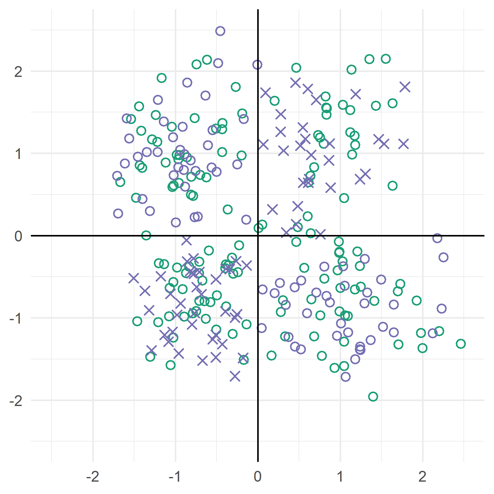

You must answer the following yes or no questions before completing the experiment.
To help you remember what the shapes and patterns look like, we have left an example image below.

In any part of this task, did you notice shapes or figures created by the blue "x"s, that were different from the display above, and unlike anything shown in the instructions?
Yes
No
In any part of this task, did you notice shapes or figures created by the blue circles, that were different from the display above, and unlike anything shown in the instructions?
Yes
No
In any part of this task, did you notice shapes or figures created by the green circles, that were different from the display above, and unlike anything shown in the instructions?
Done! You can go ahead and submit the study using the button below after leaving a comment. You will then be redirected to Prolific. Thank you!
The purpose of this experiment was to see whether you'd miss the dinosaur, given a tough visual task.
Please enter at least 50 words of comments/advice for us in the box below by answering some or all of the following questions.
Were the instructions clear? Were there any technical issues?
Did you have any of what we were trying to do? Was the task so tough that it was overwhelming?
Did you have trouble seeing the tiny shapes? Any other comments are welcome!
Once you write 50 words, a submit button will appear and you can complete the experiment!